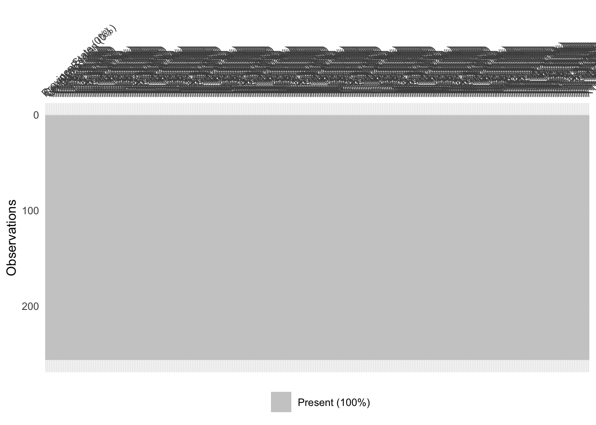

Chapter 5 Results
library(tidyverse)
library(ggplot2)
library(directlabels)
#read in data sets
confirmed <- read.csv("data/time_series_covid19_confirmed_global.csv")
recovered <- read.csv("data/time_series_covid19_recovered_global.csv")
deaths <- read.csv("data/time_series_covid19_deaths_global.csv")
#formats
confirmed2 <- confirmed %>%
pivot_longer(cols = !c(Province.State, Country.Region, Lat, Long),
names_to = "Dates", values_to = "Confirmed")
recovered2 <- recovered %>%
pivot_longer(cols = !c(Province.State, Country.Region, Lat, Long),
names_to = "Dates", values_to = "Recovered")
deaths2 <- deaths %>%
pivot_longer(cols = !c(Province.State, Country.Region, Lat, Long),
names_to = "Dates", values_to = "Deaths")
confirmed2$Dates <- as.Date(confirmed2$Dates, format="X%m.%d.%y")
recovered2$Dates <- as.Date(recovered2$Dates, format="X%m.%d.%y")
deaths2$Dates <- as.Date(confirmed2$Dates, format="X%m.%d.%y")
ggplot(confirmed2, aes(x = Dates, y = Confirmed, group = Country.Region, colour = Country.Region)) +
geom_line() +
scale_colour_discrete(guide = 'none') +
geom_dl(aes(label = Country.Region), method=list("last.points", cex=.5)) 
ggplot(deaths2, aes(x = Dates, y = Deaths, group = Country.Region, colour = Country.Region)) +
geom_line() +
scale_colour_discrete(guide = 'none') +
geom_dl(aes(label = Country.Region), method=list("last.points", cex=.5)) 
ggplot(recovered2, aes(x = Dates, y = Recovered, group = Country.Region, colour = Country.Region)) +
geom_line() +
scale_colour_discrete(guide = 'none') +
geom_dl(aes(label = Country.Region), method=list("last.points", cex=.5)) merged <- merge(confirmed2, deaths2, by = c("Country.Region","Dates"))
merged$cases_per_death <- merged$Confirmed / merged$Deaths
is.na(merged$cases_per_death)<-sapply(merged$cases_per_death, is.infinite)
merged$cases_per_death[is.na(merged$cases_per_death)]<-0
ggplot(merged, aes(x = Dates, y = cases_per_death, group = Country.Region, colour = Country.Region)) +
geom_line() +
scale_colour_discrete(guide = 'none') +
geom_dl(aes(label = Country.Region), method=list("last.points", cex=.5))